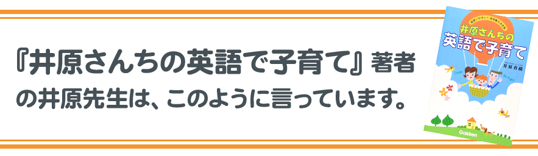
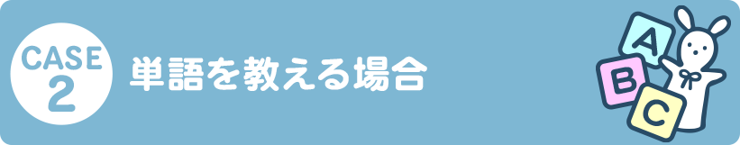
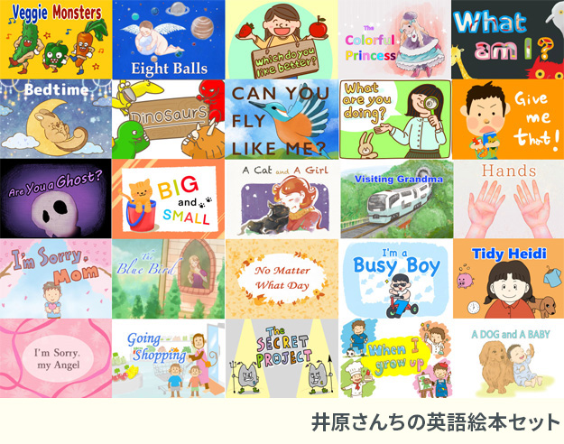

今まで1000人以上の生徒さんを見てきましたが、高額なスクールや教材にお金を使ったのに、お子さんが、初歩的な英語しか話せるようにならなかった、という方がとても多いです。英語子育てで意識すべきことはたった３つで、それを意識するだけで子どもの英語はみるみる上達します。
週に10時間以上通わせることができるならある程度の英語の習得が期待できますが、週に1時間程度のレッスンではほとんど期待できません。英語に触れる時間が少な過ぎます。

よく色の名前や動物の名前を熱心に子どもに教える親御さんがいますが、単語を覚えても肝心な英会話ができるようになるわけではありません。
4歳くらいまでは英語の動画を喜んで見ていたとしても、5歳、6歳と成長するにつれ、徐々に日本語のものを見たがるようになるのが普通です。小学生になっても英語の動画を夢中になって見続けるお子さんは少数派です。
井原さんちメソッドでは、親御さんがお子さんに英語で話しかけることをメソッドの根幹としています。親御さんが英語を話せなくても全然大丈夫です！井原さんちの英語フレーズ集では、日常会話で使うフレーズを極限まで網羅しているため、フレーズ集に書いてあるカタカナをそのまま読むだけで、日常会話の一部を英語にできます。最初の1ヶ月は日常会話の1割を英語に、3ヶ月目には3割を英語にできるようにしていきます。
「自分が英語で話しかけたら悪い発音に育つのでは？」と不安になるかもしれませんが、大丈夫です。子育て英語表現集には何百もの親子の日常英会話フレーズが収録されており、この音声データをスマホやスマートスピーカー、プレーヤー等で毎日かけ流すことで、お子さんはしっかりとネイティブの発音を吸収して育ちます。かけ流しの効果は非常に大きく、半年以上続けることで、お子さんのリスニング力とスピーキング力に変化が現れ始めます。

洋書絵本というのは、非日常の世界を楽しむために、ふだんの日常会話とは異なる文章が使われることが多くあります。日本語の絵本で考えるとわかりやすいのですが、例えば「おむすびころりん、すってんてん」と読んでも、それがすぐに日常会話に役立つかというと、そうではないですよね。独自開発の「井原さんちの英語絵本」では、日常会話で使う可能性が高い表現のみで、かつ、中学英語までの文法事項を網羅するように、ストーリーが制作されています。これにより、日常会話にも難しい文法にも強いお子さんが育ちます。
また、井原さんちの英語絵本では、お子さんが思わず真似をして読みたくなる工夫が盛りだくさん！重要な文法事項も、楽しく真似をすることで自然に身につけることができます。
日本語訳、ふりがな、全体の解説、そして読み方のお手本音声もあり、
英語が苦手な親御さんでも自信を持ってお子さんに読んであげることができます。
以前、「井原さんちの英語で子育て」の本を購入してからどっぷり井原さんちメソッドにはまりました。子供が4歳、2歳だった時に子育て英語フレーズ集を購入しました。朝起きた時から始まり、食事やお風呂、寝るまでの間に使うであろうフレーズがぎっしり！今まで大人になってからこんな夢中に何かに取り組んだ事があったかな？と思うくらい毎日夢中でフレーズを覚えました。
かけ流しも大切とのことで、音声データのかけ流しも、子どもが起きている間はほぼずっとリビングの片隅でかけ流し続けました。自分の勉強になるのはもちろん、子供達もフレーズを私よりむしろ覚え始めていて、効果に驚いています！
今までの人生で何度も英語を喋れるようになりたいと思い、いろんな教材を買っては挫折し、英会話教室でも全く身にならなかった私が、井原さんちメソッドに出会えたことで、今は子どもと英語で会話する夢が叶っています。何のストレスもなく英語を受け入れ話している子どもたちを見ると、本当にやって良かったと思います。
今まで英語の本はほとんど読んでいなかったので、いざ英語の本を読もうとなった時に、結局何を読んで良いかわからず。図書館で借りた洋書には子どもたちは全く食いつかず。藁にもすがる思いで井原さんちの英語絵本セットを購入しました。可愛いイラストやカラフルな色合い、面白いストーリーで子供達もすぐに夢中になりました！
特に、親が面白い声を出して子どもを笑わせるような絵本がたくさんあり、子どもたちにもう一回読んで！と何度も言われるようになりました。自分が英語ができないと英語絵本を読むのはハードルが高いと思うのですが、井原さんちの英語絵本には日本語の訳、カタカナ読み、文法の説明まで詳しく書いてあって、本当に助かります。何でもっと早く買わなかったんだろうとすぐに後悔しました。
自分が少しずつ本を読めるようになっていくと、子供達も真似をして読めるようになっていきました。井原さんちの英語絵本は紙芝居のようにも読むことができるので、子どもたちは祖父母の前で紙芝居のように読んであげていました。我が家では井原さんちの英語絵本のおかげで絵本タイムがとっても幸せな時間になりました。